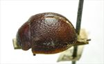
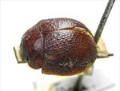
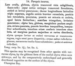

Click on images to enlarge
.jpg){kind=link}

Fig. 1. Paropsis incurva type specimen, lateral view
.jpg){kind=link}

Fig. 2. Paropsis incurva type specimen, dorsal view
{kind=link}

Fig. 3. Paropsis incurva, description
Name
Paropsis incurva Clark, 1865
Corresponds to
No known correspondence with any of the species codes.
Diagnosis and Notes
Blackburn (1897) saw neither the type nor an actual specimen of this species, though he did include it in his key (presumably from the description). He deals with it as part of his 'subgroup iv' (i.e., those species without "strongly marked characters", and whose greatest height is considerably in front of the middle of the elytral margin). Within that group, he characterises it as:
AA. Prothorax not (or scarcely) explanate at the sides;
BB. The verrucae unpunctured or nearly so;
CC. Elytra having a sharply defined discal transverse wheal-like ridge;
DD. The discal ridge concolorous with the general surface of elytra;
EE. Prothorax not at all explanate at the sides.
The character 'CC' in Blackburn's key is incorrect - the type (and so presumably the species in general) does not have a transverse wheal-like ridge on the elytra. The transverse rugulosity mentioned in the description is quite inconspicuous and distributed over the surface rather than concentrated in a 'weal'.
This is likely a species that I have not encountered, with the limited amount of work done in Western Australia.
Type specimen
Location: BMNH
Label data: /“TYPE”/ “W. Austral.”/ “6756”/ “incurva Clark”/.
Mounted on card, sex unknown; size: 7.45 (L) x 6.4 (W) x 3.5 (H) mm; A-A: 1.36 mm, HCE/BL: ~22.25% (estimated from photo of lateral view).
Overall uniform brown species, no verrucae though the thickened interstices in places almost give the appearance of a few very inconspicuous ones (mainly near apex); greatest height in front of middle.
Original description
Translation of original description (Figure 3) by ChatGPT, 04/2026:
Broadly oval, globose; the elytra, seen in transverse view, somewhat gibbous; brownish-red. Head transversely foveolate on each side anteriorly; closely and lightly punctate. Thorax three times broader than long; anterior angles shortly rounded, posterior angles broadly rounded; punctate, the punctures fairly small and dense, stronger toward the sides. Scutellum triangular, very lightly punctate. Elytra broad, globose; margins slightly expanded; striate-punctate, the punctures short, unequal, irregularly arranged in rows, sometimes confused, sometimes obsolete, becoming slightly larger and more widely spaced toward the margins. Elytra also lightly and densely verrucose and transversely rugose, the wrinkles dispersed over the whole surface. Underside reddish-ferruginous; metasternum darkened at the middle. Legs and antennae reddish-yellow. Length 3½ lines [~7.4 mm]; width 3 lines [~6.4 mm].
References
Clark, H. 1865, "Descriptions of new Phytophaga from Western Australia", Transactions of the Entomological Society of London, ser. 2, vol. 2, no. 5, 401–421 (page 412).
Copyright © 2026. All rights reserved.